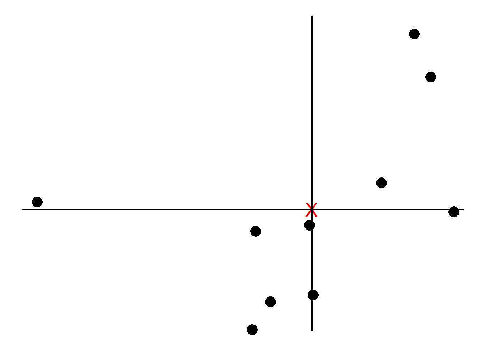

PCA
Principal Component Analysis (PCA) is one of the famous dimensionality reduction methods. When your model has too many variables, PCA helps narrowing them down to two that best explains the model. Let’s walk through the process one-by-one with a model that has two variables.
PCA starts by computing the average (red X in plot 1) of each variable. Then we can plot the center of the data by using these averages:
Next, we shift the data such that the center (marked as red) is at the origin. Note that the relative positions have not changed.

We now find the best line that fits the samples given that the line passes the origin.

To tell how good the fit is PCA projects the samples onto the line and then either find the line that minimizes the distances from the samples to the line or maximizes the distances from the projected points to the origin. Although intuitively it makes sense to go with the former, PCA prefers the latter as the computation is easier. We quantify the distances by adding up the squared distances between the projected points to the origin i.e., sum of squared distances. The line with the largest sum of squared distances is called a Principal Component (PC). We call the sum of squared distances for PC1 the Eigenvalue and the square root the Singular Value

Note the slope is about .30. This means for every 10 units we go along the x axis we go up 3 units along the y axis. So most of our data is spread out along the x axis, hence our x variable is more important when it comes to explaining how the data are spread out. We call this a linear combination of x and y.
Instead of using the original slope, we change the x and y values by making a unit vector (divide by the slope) so that the length of the slope becomes 1. We call this unit vector the Eigenvector or Singular Vector of PC1 and call the proportions of x and y Loading Scores.
To get PC2, we simply draw a line perpendicular to PC1. Then like we did for PC1, we scale to get a unit vector which becomes the Eigenvector for PC2.
 To plot the final PCA plot, we rotate so that PC1 is horizontal and then
we use the projected points to find the positions of the data points.
This is how PCA is performed using Singular Value Decomposition
(SVD).
To plot the final PCA plot, we rotate so that PC1 is horizontal and then
we use the projected points to find the positions of the data points.
This is how PCA is performed using Singular Value Decomposition
(SVD).

Lastly, we can convert the eigenvalues of PC1 and PC2 into variation
around the origin by dividing by the sample size minus 1. Using the
summarymethod in R, PCA tells us that our PC1 accounts for
82% of variation.
pca <- princomp(df)
# loadings(pca)
summary(pca)## Importance of components:
## Comp.1 Comp.2
## Standard deviation 0.8682098 0.4008325
## Proportion of Variance 0.8243033 0.1756967
## Cumulative Proportion 0.8243033 1.0000000